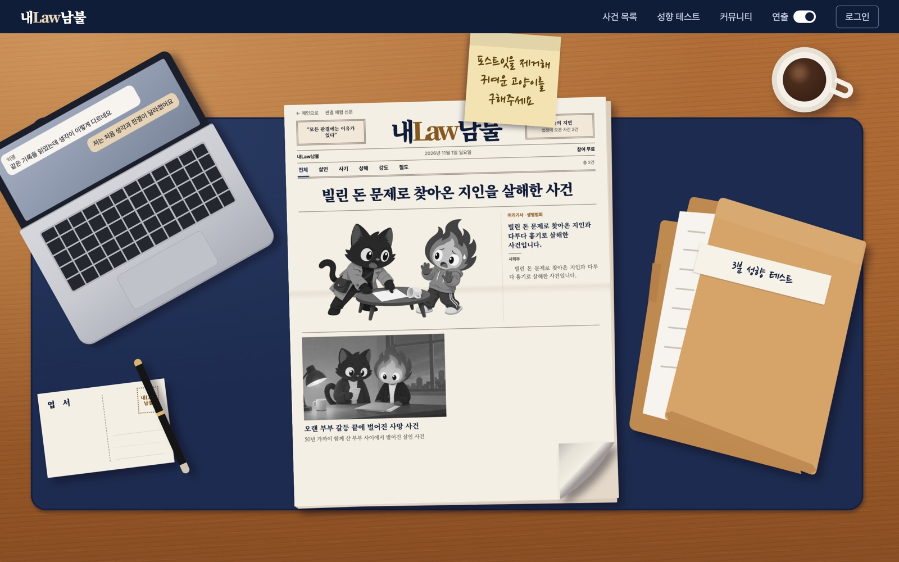
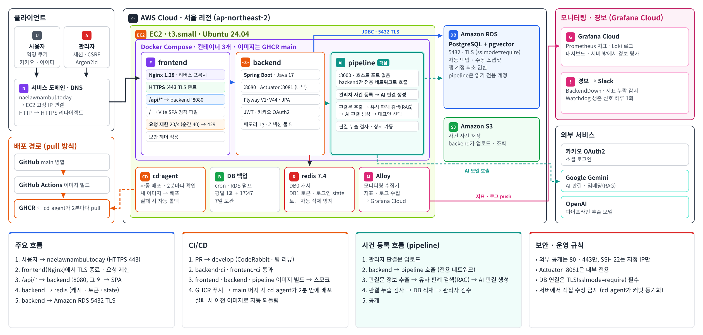

Project 1 · 데브코스 최종 프로젝트
내Law남불
🏆 최우수팀⭐ 운영진 선정 MVP
사용자가 사건을 단계별로 읽고 직접 판결을 내린 뒤, AI 판결과 실제 판결을 같은 판단 요소로 비교해 보는 서비스입니다. “누가 맞나”가 아니라 “왜 달라졌나”를 보여 주는 것이 목표였습니다.

자동 배포 17회 모두 성공, 포트·SSH 키·AWS 권한 추가 없이 달성
제출 경합 버그 2건 해결 → 늦은 요청도 409 + 현재 상태 응답
PR마다 달랐던 상태 전이 방식 3가지를 공통 메서드로 통일
운영 DB를 RDS로 옮기며 실데이터만 깨끗하게 이전

요청 흐름
- Nginx에서 TLS 종료·보안 헤더, /api는 IP별 초당 20회(순간 40회) 제한
- Spring Boot → RDS PostgreSQL(pgvector) · Redis · S3
- AI 판결 생성은 별도 pipeline 서비스, 백엔드만 전용 네트워크로 호출
제약 안에서 내린 선택
- EC2 t3.small(2GB) 한 대: backend 1GB · Redis 256MB로 나누고 swap 2GB
- DB를 RDS로 분리해 로컬 DB 컨테이너 몫의 메모리 확보
- 마이그레이션은 추가만(forward-only): 이미지를 되돌려도 스키마와 호환